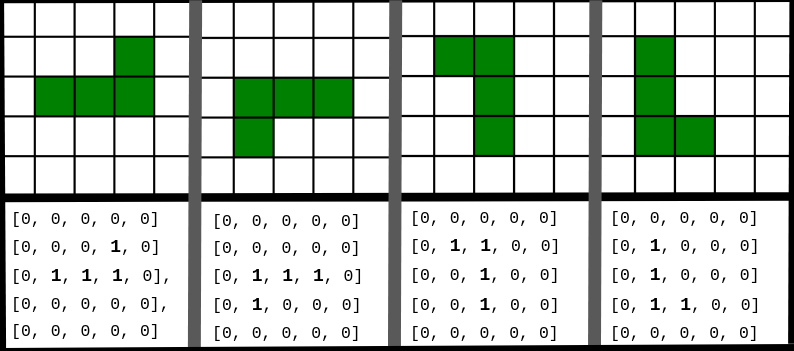
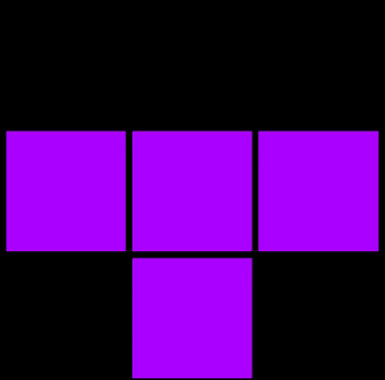
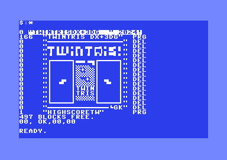

ottimizzazione:
Efficienza del codice
Tetris sfrutta tecniche come matrici 2D, bitmasking e tabelle precomputate per ottimizzare movimenti e collisioni, riducendo al minimo i calcoli necessari. La griglia di gioco è rappresentata da una matrice 2D, mentre il bitmasking velocizza le verifiche delle righe e delle collisioni. Le tabelle precomputate rendono le rotazioni e le collisioni ancora più rapide.
Rendering ottimizzato
Per hardware limitato, il rendering è semplificato, con grafica minimale che riduce il carico su CPU e memoria, garantendo un gioco fluido anche su dispositivi a bassa potenza.


